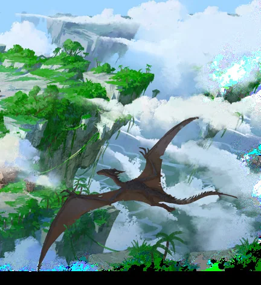

Um arquipélago extraordinário de ilhas suspensas por Cristais de Aerólito, ligados por pontes de corda, elevadores movidos a vento e tirolesas. O Povo-Pássaro vive ali. Embora pacífico, enfrenta piratas e contrabandistas que extraem os cristais e ameaçam derrubar as ilhas.
Tramas Secretas da região
Conteúdo da seção
Tramas Secretas
A maior fonte de renda da Guilda dos Exploradores é o contrabando de Cristais de Aerólito vendidos à Torre, que paga bem e não faz perguntas. A Guilda evita extração excessiva e combate piratas mais imprudentes. Ironicamente, o Povo-Pássaro contratou a própria Guilda para projetar defesas e armadilhas contra contrabandistas.
A Companhia Dourada perdeu a autorização para minerar quando os habitantes perceberam o dano. Agora patrocina expedições contra piratas para recuperar os direitos. Piratas utilizam prisioneiros do Povo-Pássaro para navegar e evitar patrulhas.
NPCs Importantes
Capitão Canto da Tempestade. Bardo cruel e líder astuto dos piratas a bordo do Perfuranuvens. Possui sorriso afiado, voz capaz de convocar tempestades e talento para compelir inimigos a se atirarem no vazio.
Eyrab. Pescador de uma perna que odeia o Kraken Celeste. Viaja em uma pequena jangada com isca apodrecida e arpão gigante. Recusa-se a morrer antes da criatura.
Harla Coração de Vendaval. Ex-pirata que protege as minas para expiar crimes cometidos quando saqueava os mesmos céus.
Finn, o Cortador. Ladino caolho e principal contrabandista da Guilda. Conhece as ilhas quase tão bem quanto os nativos, possui língua de prata e sempre encontra uma saída.
Rook. Líder estoico das patrulhas e mestre da magia do vento e do relâmpago. Considera piratas um flagelo e vê a si mesmo como extensão mortal da justiça do Soberano dos Ventos.
Soberano dos Ventos. Ave gigantesca de rosto Humano, asas que ocultam o sol e garras carregadas de relâmpagos. É venerada pelo Povo-Pássaro e inimiga mortal do Kraken Celeste.
Pontos de Interesse
- Aldeias do Povo-Pássaro. Vilas castigadas pelo vento entre árvores emplumadas. Recebem estrangeiros por pouco tempo; invasores capturados recebem justiça imediata.
- Minas de Aerólito. No coração das ilhas e protegidas por guardiões dos ventos. As regiões externas estão próximas do esgotamento e podem cair.
- Perfuranuvens. Navio pirata voador gigantesco, sempre oculto e em movimento. Ninguém entra ou sai de suas docas sem ser percebido.
- Recife da Tempestade. Covil de uma Draca da Tempestade e de ovos não eclodidos, valiosos e saborosos.
- Ninho do Amanhecer. Mosteiro isolado no pico mais alto. Centro de conhecimento, meditação e treinamento, acessível apenas depois de provas aéreas mortais.
- Cemitério de Navios. Círculo estreito de ilhas com ventos violentos e correntes repletas de embarcações destruídas.
- Fortaleza Afogada. Ruína parcialmente submersa que flutua entre nuvens de chuva, infestada por serpentes e Serpes celestes.
- Ninho Real. Círculo vasto de rochedos flutuantes e ilhas quebradas, local de reprodução de Grifos e falcões gigantes. É cobiçado pelos Homens-Serpente.
Encontros
Peixes Celestes. Peixes coloridos que nadam pelo ar. São capturados facilmente e usados como alimento ou isca.
Patrulha do Povo-Pássaro. Vigilantes que caçam contrabandistas usando o poder dos ventos e relâmpagos.
Piratas Celestes. Pequena embarcação voadora com capitão e tripulação leal. Gananciosos e indignos de confiança.
Enguias Aladas. Criaturas serpentinas com asas emplumadas que deslizam em silêncio e se camuflam nas nuvens.
Falcão da Tempestade. Ave de rapina com penas carregadas de relâmpagos, encontrada em tempestades.
Macacos Voadores. Servos dos piratas, especialistas em emboscadas e roubos.
Vento Vivo. Massa perigosa de vento e nuvens elementais, frequentemente criada em cavernas mineradas por tempo demais.
Draco da Tempestade. Predador de escamas semelhantes a nuvens. Explode em relâmpagos ao morrer.
Kraken Celeste. Fera Colossal de corpo flutuante e tentáculos, que captura navios e conjura nuvens negras para fugir.
Tesouros
- Cristal de Aerólito. Gema translúcida que permite manipular o ar e reduz a velocidade de queda. Em quantidade suficiente, pode fazer objetos grandes voarem.
- Tomo do Caminhante das Nuvens. Tomo antigo de rituais para controlar os céus, encadernado em couro de Wyvern e protegido por fechaduras arcanas.
- Tapete Voador. Tapete que retrata a história do Povo-Pássaro e se move como se tivesse vontade própria.
- Coração do Céu. Gema amarela com a alma do Soberano dos Ventos; fortalece Magias de Relâmpago.
- Coroa do Flagelo Celeste. Guirlanda enferrujada coberta de cracas. À noite, runas permitem Invocar piratas fantasmas obedientes até o amanhecer.
- Invocador da Tempestade. Orbe com nuvens giratórias; cria uma tempestade breve.
- Cota Forjada pelo Vento. Armadura Leve de minerais raros que reduz muito o Dano de Relâmpago.
- Capa dos Ventos. Capa de penas encantadas que concede voo limitado e permite planar.
- Botas do Zéfiro. Botas de couro de Draco da Tempestade, capazes de caminhar pelo ar por curtas distâncias.